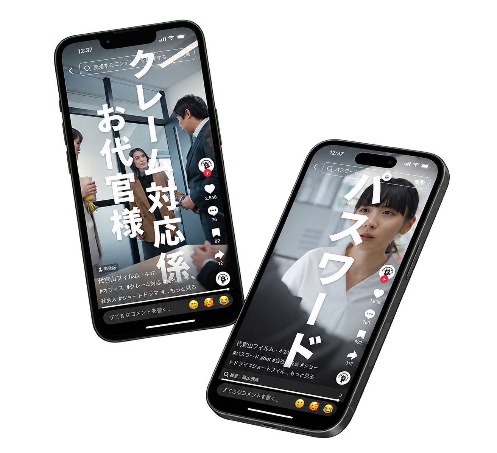

DAIKANYAMA FILM / SHORT DRAMA
PRに”縦型ショートドラマ”記憶に残る広告には”物語”がある
再生回数10万回保証
✓構成力 と 演出力✓業界最速 の 納品✓安心 の 社内完結
今すぐ無料相談↗
共感が生まれる映像体験をあなたのブランドにも
SCROLL
THE POWER OF A STORY
ショートドラマに
できること
広告っぽいものは見たくない。
そんな本音に、物語で応える。
スマホ時代の今、情報は “短く・強く・印象的に” 伝える必要があります。SNSや動画広告では、冒頭１秒で離脱されることも。そこで、物語性をもったショートドラマが価値を発揮します。
ATTENTION1秒から、心をつかむ。
目に留まる動画で
視聴完了率やCV率
が高まる
採用やサービス訴求
を一体化
LET’S TALK ABOUT IT
こんなお悩み
ありませんか？
広告の届け方に、次の一手を。
広告主さま
01他社と差別化ができてない
02広告単価が合わなくなってきた
代理店さま
01顧客への提案がマンネリ化
02別の切り口で提案が必要
THE PROBLEM
よくある失敗例
広告の届け方を変えるだけで、
伝わり方は大きく変わります。
静止画広告
情報が一方的で、ブランドの魅力が伝わりきらない。
商品紹介動画
広告感が強く、視聴者の共感や記憶に残りにくい。
キャンペーン施策
一時的な反応に留まり、ファン化につながらない。
LET SHORT DRAMAS DO THE WORK!
ショートドラマで
解決！
広告っぽいものは見たくない。
そんな本音に、「ストーリー」という感情の入口からアプローチ。
SNSや口コミでの拡散が自発的に起き、
放っておいても認知が回る
従来のインスタ広告の1/2〜1/3の広告単価で成果を出す事例も。
大手企業も続々と導入
「見せる広告」から
「語られる広告」へ
ブランドの価値を
物語として届ける
共感を起点に、記憶に残るコミュニケーションを設計します。
OUR STRENGTHS
私たちの強み
01CREATION
IN MOTION
最短3日で納品
クライアントの要望に素早く応えるため、業界内でも最速の制作スピードを実現。急なプロジェクトにも対応します。
IN MOTION
高品質な
制作
感動を生む映像を、高いクリエイティブ力で創り上げます。
柔軟な
対応力
業種や目的に合わせたストーリーと演出で支援します。
戦略的
アプローチ
視聴者の反応を分析し、効果を数値で示します。
業界実績と
信頼
豊富な実績とSNSトレンド分析でブランド価値を高めます。
FIRST PROJECT? FEEL SECURE.10万view
保証!
保証!
VIEW GUARANTEE
さらに！はじめての方でも
安心の保証つき！
最低回数10万回再生の
保証がついています。
ご検討中の不安を少しでも解消し、安心してご依頼いただくために、最低でも10万回の再生保証をさせていただいております。
お問い合わせフォーム ↗PRICES
価格
目的・ご予算に合わせたプランをご提案します。
企画・撮影・編集
ストーリー設計から納品まで一貫して制作
ご予算に合わせてお見積り最短3営業日〜
社内一貫体制でスピーディーに対応
まずはお気軽にご相談くださいWORKS
制作実績
物語の力で、ブランドの認知と好感を。

ORGANIC REACH
実際にどんな効果を得られたか？
企業の認知度拡大と親しみやすいブランドイメージの構築を目的に、ショートドラマ形式で展開。日常の一コマをベースにした構成でターゲット層の共感を引き出し、広告を使用せずにオーガニックで合計270万回再生を達成しました。
270万回ORGANIC VIEWS
お問い合わせ ↗PRODUCTION PROCESS
納品までの流れ
ヒアリング・相談
ブランドの目的やターゲットをお聞きします。
コンセプト・脚本作成
ブランドに合ったストーリーと脚本を設計します。
撮影準備
監督・キャスト・ロケーションなどを準備します。
撮影
プロフェッショナルなスタッフが撮影します。
編集
映像を編集し、音楽やエフェクトを加えます。
納品・サポート
納品後の効果測定や運用改善も支援します。
FAQ
よくある
質問
検討中ですが見積もりだけの相談は可能？＋
はい。企画段階でもお気軽にご相談ください。ヒアリング内容に応じてお見積もりいたします。
依頼から制作終了までの期間は？＋
内容によりますが、最短3営業日から対応可能です。ご希望の納期をお聞かせください。
動画の制作だけなどスポット依頼も可能？＋
企画・撮影・編集など、部分的なご依頼にも対応しております。
追加料金が発生することはありますか？＋
追加費用が発生する場合は、事前に内容と金額をご説明します。
アカウントの立ち上げから運用まで相談できますか？＋
立ち上げ、方針設計、投稿代行までご相談いただけます。